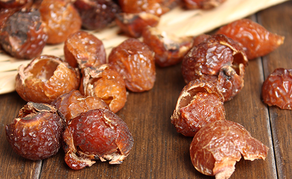
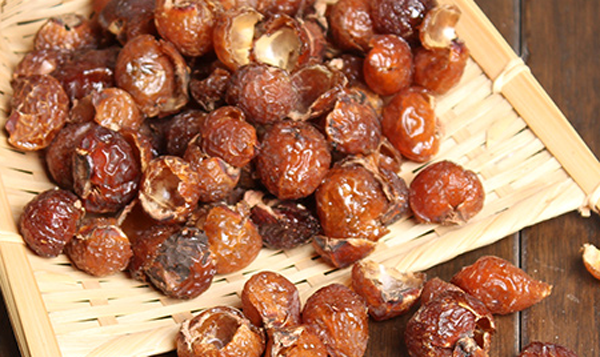
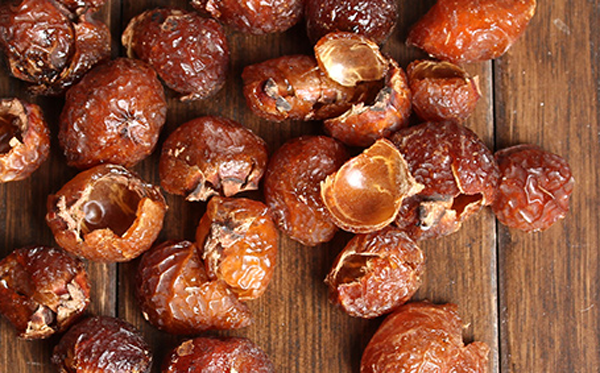

无患子被称为鬼见愁，这个出处来自李时珍的《本草纲目·木二·无患子》，因为旧俗采之令童子佩戴，或悬于门上，云可以避鬼魅。所以俗名鬼见愁。无患子的功效与作用有很多，因此被称为神草，它可以治疗许多疾病，无患子果还可以做成手串。
1、清热祛痰
无患子的果实具有清热化痰的功效，适用于咽喉炎、扁挑体炎、支气管炎、百日咳等症状，它的根具有清热解毒的功效，适用于发烧感冒、咳嗽等症状。
2、杀虫
无患子中的假种皮含有一种叫皂苷的物质，它属于农药乳化剂。可以用来防治甲壳虫、蚜虫及其他软体动物，具体方法：无患子果皮和水的比例1:5，浸泡24小时，然后过滤后加20%的植物油，均匀搅拌后生成原液，在用1:20的比例加水稀释，喷在需要防范的地方即可起到杀虫防虫的作用。
3、消积

无患子具有消积的功效，可以消除胃部积食、消除腹内积滞，因此适用于胃部积食的人群。用法：无患子5至7粒，煨熟吃，每日1次，可连服数日。
4、哮踹
无患子对咳喘、哮喘都有很好的功效，适用于成人哮喘，同样也适用于小儿哮喘，服用方法：将无患子煅灰用水吞服，小儿，每天一次，每次6分，成人每日一次，每次2钱。
5、牙肿痛

无患子具有消除牙齿肿痛的功效，对于牙龈经常发炎的人群，可以外用，用无患子1两，大黄1两、香附1两，青盐半两，泥固煅研，日用擦牙。
1、无患子去污垢油腻的作用
无患子果实含有37%的皂素(黄豆含皂素仅0.3%)，具有去污的作用，可当成肥皂使用，所以无患子又被称为“肥皂果”或“洗手果”，油性皮肤的人群，可稀释无患子溶液擦脸，可去除油光满面的困扰，还你清爽面颊。
2、美白祛斑的作用

无患子具有美白祛斑的作用，它可以抑制Tyrosinase的分解，Tyrosinase为一种酶，有助黑色素的形成。因此无患子有祛除黑斑的作用。
3、去头屑
无患子具有去头皮屑，消炎的作用，可消灭头虱、动物身上的跳蚤。经常用无患子洗发会消除头皮屑，特别是脂漏性皮肤炎患者形成所谓的头皮屑。
结语：无患子具有消炎止咳、清热解毒、杀虫、美白祛斑、去头屑、消除牙齿肿痛、去污去腻的功效与作用，既可外用、也可内服，针对不同的症状对症下药。